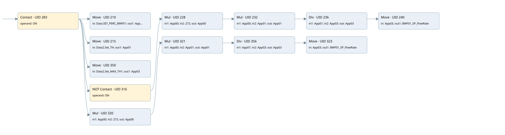

bwf01 speed calculation
analog output conversion · 검색 색인 순서 3 · 원본 내부 NID 추정 3
백업 PLF 원본의 3080743 바이트 위치에서 복원한 XML. 검색 문서 1681의 객체 키 16102200a766000000000000와 연결했다. 이름 해석 30/30개. 남은 RefId는 상수 또는 미해석 참조다.
연결 구조 다시 그리기
원본 Part/PCon/Wire를 이용한 연결도다. TIA 화면의 래더 배치 또는 실행 결과를 재현한 그림은 아니다. 핀 연결은 아래 표와 원본 XML을 기준으로 읽는다. 노드 위에 마우스를 두면 피연산자 이름을 볼 수 있다.

접점·코일·블록과 피연산자
| Part UID | Gate | Negated 핀 | 연결 피연산자 |
|---|---|---|---|
| 283 | Contact | operand = ON | |
| 210 | Move | in = Data.SET_PERC_BWF01; out1 = App00 | |
| 215 | Move | in = Data2.Set_TH; out1 = App01 | |
| 350 | Move | in = Data2.Set_MAX_TH1; out1 = App03 | |
| 316 | Contact | operand | operand = ON |
| 228 | Mul | in1 = App00; in2 = 272; out = App00 | |
| 232 | Mul | in1 = App00; in2 = App01; out = App01 | |
| 236 | Div | in1 = App01; in2 = App03; out = App03 | |
| 240 | Move | in = App03; out1 = BWF01_SP_FlowRate | |
| 320 | Mul | in1 = App00; in2 = 272; out = App00 | |
| 321 | Mul | in1 = App00; in2 = App01; out = App01 | |
| 356 | Div | in1 = App01; in2 = App03; out = App03 | |
| 323 | Move | in = App03; out1 = BWF01_SP_FlowRate |
접점 경로를 펼친 조건식
Contact·O/A·비교기의 원본 연결을 읽기 쉽게 펼친 보조 해석이다. POWER는 전원 레일 시작을 뜻한다. 호출 블록·에지·타이머의 내부 동작과 다중 쓰기 순서는 이 표로 실행 검증하지 않았다. 미해석 핀과 RefId는 원문 연결표에서 확인한다.
| UID | 동작 | 대상 | 원본 접점 경로 | 내용 |
|---|---|---|---|---|
| 210 | Move | App00 | ON | Move 입력 Data.SET_PERC_BWF01 |
| 215 | Move | App01 | ON | Move 입력 Data2.Set_TH |
| 350 | Move | App03 | ON | Move 입력 Data2.Set_MAX_TH1 |
| 240 | Move | BWF01_SP_FlowRate | Div UID 236.eno (블록 동작 확인) | Move 입력 App03 |
| 323 | Move | BWF01_SP_FlowRate | Div UID 356.eno (블록 동작 확인) | Move 입력 App03 |
원본 배선 연결
| Wire UID | 동일 Wire 연결 끝점 |
|---|---|
| 285 | Powerrail {} ↔ Part 283.in |
| 261 | ORef 243 (ON) ↔ Part 283.operand |
| 284 | Part 283.out ↔ Part 210.en ↔ Part 215.en ↔ Part 350.en ↔ Part 316.in ↔ Part 320.en |
| 262 | ORef 244 (Data.SET_PERC_BWF01) ↔ Part 210.in |
| 263 | Part 210.out1 ↔ ORef 245 (App00) |
| 264 | ORef 246 (Data2.Set_TH) ↔ Part 215.in |
| 265 | Part 215.out1 ↔ ORef 247 (App01) |
| 354 | ORef 351 (Data2.Set_MAX_TH1) ↔ Part 350.in |
| 355 | Part 350.out1 ↔ ORef 352 (App03) |
| 319 | ORef 317 (ON) ↔ Part 316.operand |
| 22 | Part 316.out ↔ Part 228.en |
| 268 | ORef 250 (App00) ↔ Part 228.in1 |
| 269 | ORef 251 (272) ↔ Part 228.in2 |
| 271 | Part 228.eno ↔ Part 232.en |
| 270 | Part 228.out ↔ ORef 252 (App00) |
| 272 | ORef 253 (App00) ↔ Part 232.in1 |
| 273 | ORef 254 (App01) ↔ Part 232.in2 |
| 275 | Part 232.eno ↔ Part 236.en |
| 274 | Part 232.out ↔ ORef 255 (App01) |
| 276 | ORef 256 (App01) ↔ Part 236.in1 |
| 277 | ORef 257 (App03) ↔ Part 236.in2 |
| 279 | Part 236.eno ↔ Part 240.en |
| 278 | Part 236.out ↔ ORef 258 (App03) |
| 280 | ORef 259 (App03) ↔ Part 240.in |
| 281 | Part 240.out1 ↔ ORef 260 (BWF01_SP_FlowRate) |
| 336 | ORef 324 (App00) ↔ Part 320.in1 |
| 337 | ORef 325 (272) ↔ Part 320.in2 |
| 338 | Part 320.eno ↔ Part 321.en |
| 339 | Part 320.out ↔ ORef 326 (App00) |
| 340 | ORef 327 (App00) ↔ Part 321.in1 |
| 341 | ORef 328 (App01) ↔ Part 321.in2 |
| 23 | Part 321.eno ↔ Part 356.en |
| 343 | Part 321.out ↔ ORef 329 (App01) |
| 361 | ORef 357 (App01) ↔ Part 356.in1 |
| 362 | ORef 358 (App03) ↔ Part 356.in2 |
| 24 | Part 356.eno ↔ Part 323.en |
| 363 | Part 356.out ↔ ORef 359 (App03) |
| 348 | ORef 333 (App03) ↔ Part 323.in |
| 349 | Part 323.out1 ↔ ORef 334 (BWF01_SP_FlowRate) |
식별자 해석 근거 30개
| ORef UID | RefId | 이름 | IdentXmlPart 파일 | 해석 방법 |
|---|---|---|---|---|
| 243 | 1 | ON | 0664-IdentXmlPart.xml | UID/RID + search-text + NID agreement |
| 244 | 10 | Data.SET_PERC_BWF01 | 0662-IdentXmlPart.xml | UID/RID + search-text + NID agreement |
| 245 | 19 | App00 | 0663-IdentXmlPart.xml | UID/RID + search-text + NID agreement |
| 246 | 4 | Data2.Set_TH | 0662-IdentXmlPart.xml | UID/RID + search-text + NID agreement |
| 247 | 21 | App01 | 0663-IdentXmlPart.xml | UID/RID + search-text + NID agreement |
| 351 | 23 | Data2.Set_MAX_TH1 | 0662-IdentXmlPart.xml | UID/RID + search-text + NID agreement |
| 352 | 24 | App03 | 0663-IdentXmlPart.xml | UID/RID + search-text + NID agreement |
| 317 | 1 | ON | 0664-IdentXmlPart.xml | UID/RID + search-text + NID agreement |
| 250 | 19 | App00 | 0663-IdentXmlPart.xml | UID/RID + search-text + NID agreement |
| 251 | 26 | 272 | 0661-IdentXmlPart.xml | literal candidate: UID/RID/NID + nearby named declarations + search-text agreement |
| 252 | 19 | App00 | 0663-IdentXmlPart.xml | UID/RID + search-text + NID agreement |
| 253 | 19 | App00 | 0663-IdentXmlPart.xml | UID/RID + search-text + NID agreement |
| 254 | 21 | App01 | 0663-IdentXmlPart.xml | UID/RID + search-text + NID agreement |
| 255 | 21 | App01 | 0663-IdentXmlPart.xml | UID/RID + search-text + NID agreement |
| 256 | 21 | App01 | 0663-IdentXmlPart.xml | UID/RID + search-text + NID agreement |
| 257 | 24 | App03 | 0663-IdentXmlPart.xml | UID/RID + search-text + NID agreement |
| 258 | 24 | App03 | 0663-IdentXmlPart.xml | UID/RID + search-text + NID agreement |
| 259 | 24 | App03 | 0663-IdentXmlPart.xml | UID/RID + search-text + NID agreement |
| 260 | 17 | BWF01_SP_FlowRate | 0664-IdentXmlPart.xml | UID/RID + search-text + NID agreement |
| 324 | 19 | App00 | 0663-IdentXmlPart.xml | UID/RID + search-text + NID agreement |
| 325 | 26 | 272 | 0661-IdentXmlPart.xml | literal candidate: UID/RID/NID + nearby named declarations + search-text agreement |
| 326 | 19 | App00 | 0663-IdentXmlPart.xml | UID/RID + search-text + NID agreement |
| 327 | 19 | App00 | 0663-IdentXmlPart.xml | UID/RID + search-text + NID agreement |
| 328 | 21 | App01 | 0663-IdentXmlPart.xml | UID/RID + search-text + NID agreement |
| 329 | 21 | App01 | 0663-IdentXmlPart.xml | UID/RID + search-text + NID agreement |
| 357 | 21 | App01 | 0663-IdentXmlPart.xml | UID/RID + search-text + NID agreement |
| 358 | 24 | App03 | 0663-IdentXmlPart.xml | UID/RID + search-text + NID agreement |
| 359 | 24 | App03 | 0663-IdentXmlPart.xml | UID/RID + search-text + NID agreement |
| 333 | 24 | App03 | 0663-IdentXmlPart.xml | UID/RID + search-text + NID agreement |
| 334 | 17 | BWF01_SP_FlowRate | 0664-IdentXmlPart.xml | UID/RID + search-text + NID agreement |
검색 코드 보조 자료
참조 명칭을 찾기 위한 자료이며 실행 순서나 AND/OR 관계는 위 연결표로 확인한다.
"on" move "data".set_perc_bwf01 move "data2".set_th #app01 move "data2".set_max_th1 #app03 "on" mul #app00 272 mul #app00 #app01 div #app01 #app03 move #app03 #app00 #app01 #app03 "bwf01_sp_flowrate":p mul #app00 272 mul #app00 #app01 div #app01 #app03 move #app03 #app00 #app01 #app03 "bwf01_sp_flowrate":p #app00